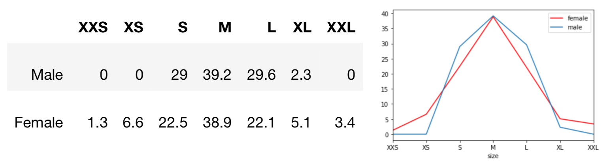
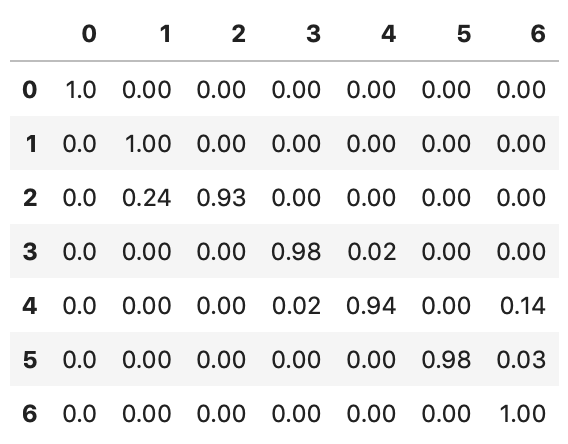
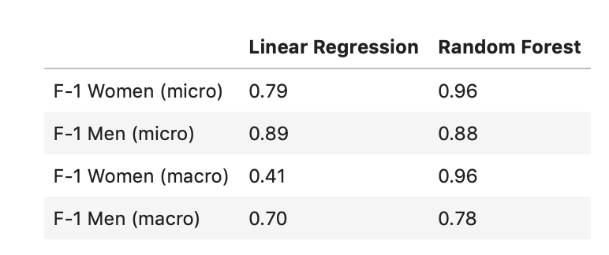
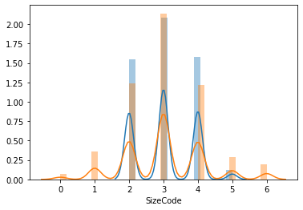

Consumer Studies


More studies to be added ⋅⋅⋅
Social Studies


More studies to be added ⋅⋅⋅
More studies to be added ⋅⋅⋅
More studies to be added ⋅⋅⋅
2020
biostats of 2000+ adults
living in California
in 2018 Health Survey
height
weight
gender
21177
Python
sklearn
Linear Regresssion
Random Forest
The right size ratio of inventory that matches market needs is critical in inventory control. Currently most businesses still make size ratio decisions based on limited data from previous sales seasons, product categories, and regions, resulting in overstock in some sizes and under-stock in other sizes. Buyers tend to make a “safe bet” on the middle size and let the fringe sizes run out first. The market is also evolving in size, due to changes in lifestyle and migration. In this project, I married the latest health survey data to industry size categorization (size chart you see when you buy clothing online) and map out the size ratio for the population of California residents, as sampled in this survey.
The size M for both female and male consumers is about 40%. So buyers do get their instinct right, to stock up mostly on M. But then the nuances of size distribution kick in. For men, S and L are equally second tier, close 30% each. XL is actually only 2.3%. Female sizing are more dispersed: S and L take about 22%, but XS and XL are 5-6%, XXL 3.4% and XXS is only 1.3%. With this general population based size ratio, buyers can tune up purchase plans to better reflect. A next step would be to increase the granularity to drill down to size ratio per county, per age, and per other demographic factors.
How tall are the adult men and women living in California? Below is a graph which gives a quick view to describe the density of population in a certain weight and height combination on the grid. The darker the color, the more people fall into that category. We can see the blue “center of the storm” for men is at 5’9” (1.8 meter) and 190 lbs (86 kilogram) and the red cloud for women is (1.6 meter) and 157 lbs (71 kilogram).

Overweight is alarmingly common across all age and gender groups. From the plots below, we can see BMI categorized overweight in different age groups and gender groups sampled in this survey.
Steps
⦿ Remove any off-chart sizing
⦿ Set up Training and Test data with
sklearn RandomForestClassifier()
⦿ Define predictors and outcome variables
⦿ Build Random Forest
and select the optimal number of trees
⦿ Evaluate results
Confusion Matrix for Women
Random Forest outperformed Linear Regression
Below distribution chart shows the prototype of size distribution for men and women with available health survey data and sizing chart online. However, 10% of women and 14% of men have their sizes off-chart. My prediction model can solve this off-chart problem by providing predicted size values to complete the size distribution.
For more details of this project, you can find my project presentation and code for bucketing size per height and weight input.